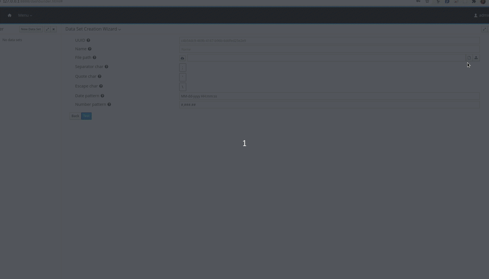
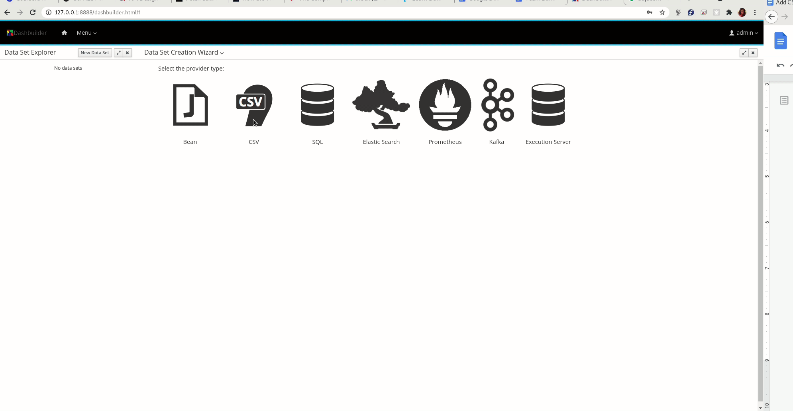

Add CSV datasets for authoring dashboards
Dashboards are essential information management tools that play an important role in business automation by providing at a glance awareness into complex business data with the help of visualizations involving key performance indicators(KPIs), metrics, and other key data points related to business or specific processes.
DashBuilder is a standalone tool that is also integrated into Business Central to be used by the Datasets editor and Content Manager page for creating dashboards and reporting.
When it comes to building dashboards, you can configure the dashboards to consume your own datasets in DashBuilder from a variety of sources like Bean, CSV, SQL, Prometheus, Elastic Search, Kafka, and Execution server. In this post, you will learn how to add and configure a CSV dataset for your dashboards.
Add and configure CSV datasets on DashBuilder
- Log in to DashBuilder. You will see the homepage which resembles the screen below.

- In order to add a dataset, select Datasets from the menu. Alternatively, you can also click on the “Menu” dropdown on the top left corner beside the DashBuilder logo on the navigation bar. You will now see two headings, DashBuilder and Administration. Click on “Datasets” under Administration. You will see the Dataset Authoring home page with instructions to add datasets, create displayers and new dashboards.

- Now, you can either click on the “New Data Set” on the top left corner beside “Data Set Explorer” or click on the “new data set” hyperlink in Step 1. You will now see a Data Set creation wizard screen that shows all dataset providers like Bean, CSV, SQL, Elastic Search, and so on.

- Select “CSV” from the list of provider types. You will now see the following screen to add your CSV data sets with a form that asks you to add details about the CSV data set like Name, separator characters, Quote characters and so on.

- In the CSV configuration tab, the first field is UUID, which stands for the data set’s Enter a name for your data set against the “Name” field, which will help you identify your data set while adding components. For the file path, for selecting a file from your system, click on the icon on the right side of the textbox against “File path” and select the CSV file from your system, don’t forget to click on the upload button to the right of the icon, after selecting the CSV file. Alternatively, you can also switch to the remote URL mode and enter the path to the CSV file.

Similarly, edit the separator characters(the characters used to separate the values in your CSV), quote character(the character used for quotes in your CSV), escape character(the character used for escaping values in your CSV), date pattern, and number pattern. If you are confused about the role of characters, please hover on the question mark icons beside the fields or the text boxes adjacent to them. Click on Test to preview your dataset.
- You are now on the Preview tab. You can now have a look at the data columns and add filters in the tabs above the dataset. You can also delete the columns that you don’t require by unchecking the checkbox beside the columns provided on the left side. If the preview isn’t what you expected, you can switch back to the CSV configuration tab and make changes. If you are satisfied with the preview, click on the “Next” button.

- Enter required comments in the Save modal and click on the Save button.
Your dataset has been added and configured. You will now be directed back to the Data Set Authoring Home page. You can now see a dataset on the left pane. When you add multiple datasets, you can see the list of all of them on the left pane. Here is a screen recording of the full flow.

You can now click on the Menu dropdown on the navigation bar and select Content Manager to create pages and dashboards.
Conclusion
In this post, we walked you through steps to add and configure CSV datasets to be consumed by your dashboards. In the upcoming posts, we will add walkthroughs of the other dataset providers, so stay tuned!